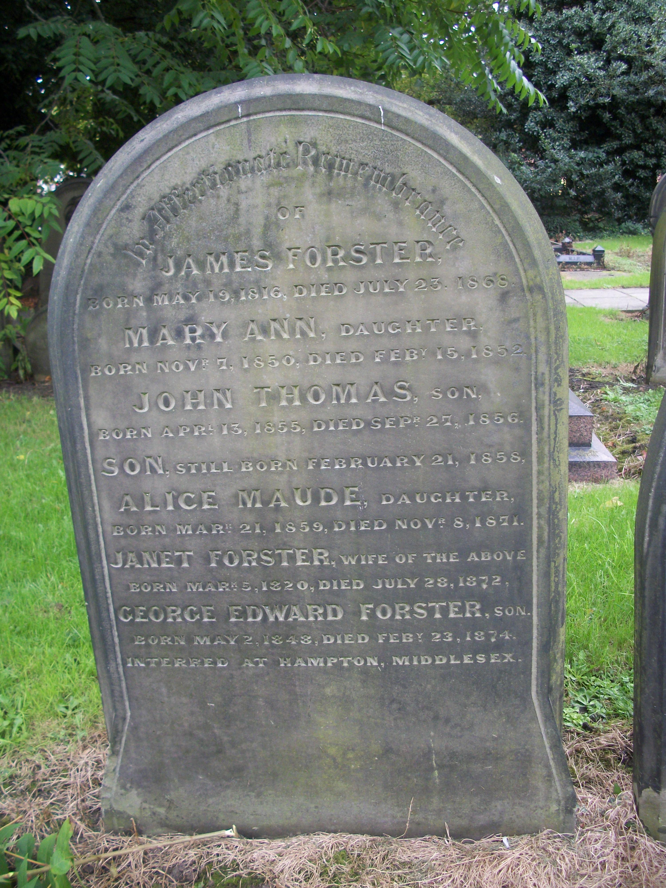
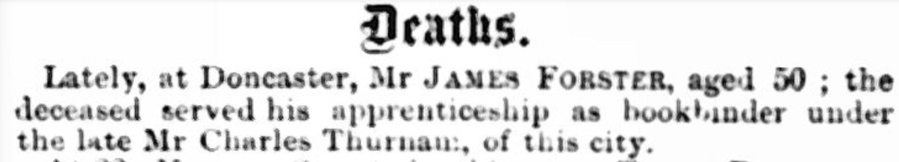
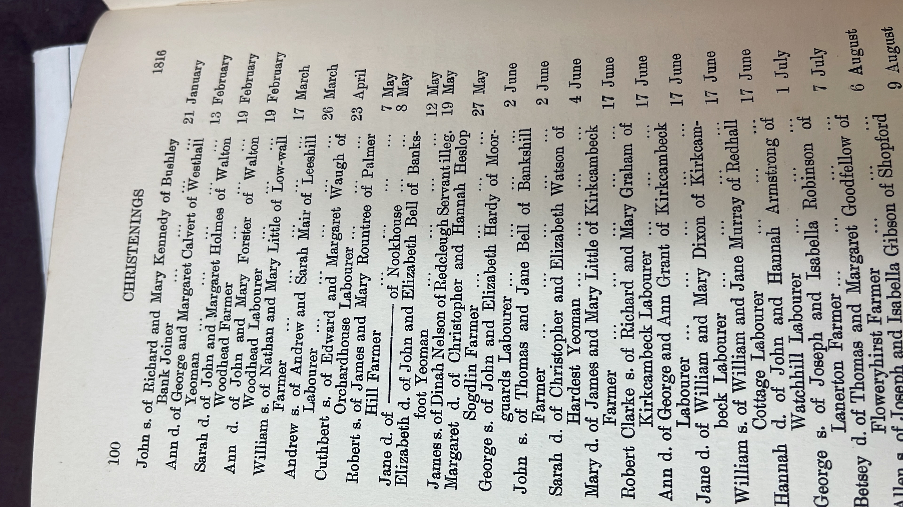

A client contacted me after finding Solving Your Mysteries through the Cumbria Archives website. They had already done substantial work on their ancestor James Forster, a nineteenth-century bookbinder with links to Lanercost, Carlisle, Glasgow and Doncaster, but one question remained stubbornly unresolved: who were James’s parents, and where was his baptism?
The problem: a well-documented adult with a missing beginning
James was not an ancestor who simply disappeared from the records. In adulthood, there was a useful trail. His headstone gave a birth date of 19 May 1816. In the 1841 Scottish census he appeared as James Forrester, a bookbinder living in Glasgow with his wife Janet and their young family. Later English census returns placed him in Doncaster and gave his birthplace first as Carlisle and then, more specifically, Lanercost.

His later life therefore had shape, but his early life did not. No convincing birth or baptism for a James Forster could be found around 19 May 1816 in Lanercost or Carlisle, and the marriage of James and Janet also remained elusive. A newspaper death notice added another clue by saying that James had served his apprenticeship as a bookbinder under Charles Thurnam of Carlisle.

The task was not to build James’s entire family tree from scratch. It was to take the evidence already assembled by the client, avoid duplicating their work, and focus on the unresolved gap at the beginning of James’s life.
Starting with a research plan
I began by checking the major online sources and relevant parish material, including Ancestry, FamilySearch, ScotlandsPeople and indexes connected with Lanercost and Carlisle. I searched both the Forster name and spelling variants, and I also looked for the missing marriage.
Those searches did not produce the baptism we wanted. Rather than treating that as a dead end, the absence itself became useful. If James consistently said he had been born in the Carlisle/Lanercost area on or around 19 May 1816, but no matching James Forster appeared in the expected records, then I needed to consider whether the surname might have changed.
The breakthrough at Cumbria Archives
I booked a research visit to Cumbria Archives so that I could examine material that was not giving us an answer online. Among the sources I checked was a printed Lanercost parish register.
There I found an entry that immediately stood out:

The entry recorded an illegitimate son named James, born to Dinah Nelson of Redcleugh, on the exact date later associated with James Forster. It was also in the parish James later identified as his birthplace.
One matching date is not enough, on its own, to prove identity. But genealogy becomes persuasive when several independent pieces of evidence begin pointing in the same direction.
Why the name “Nelson” mattered
The surname in the baptism was especially significant because “Nelson” had not vanished from James Forster’s family. At least two of his children carried it as a middle name: James Nelson Forster and Horatio Nelson Forster.
Middle names can preserve family surnames, commemorate relatives or record relationships that are not obvious from later records. In this case, the repeated use of Nelson became much more meaningful once a possible baptism for James himself appeared under that surname.
The client had already noticed that Nelson seemed important within the family, but the archive record suggested a new explanation: it may not simply have been a chosen middle name. It may have preserved James’s original surname and a connection to his mother, Dinah Nelson.
Testing the theory rather than forcing it
Once I had a plausible James Nelson, the next step was to try to disprove the theory as well as support it. I continued looking for a separate James Forster born at the right time and place, searched for James’s marriage under the Nelson surname, and investigated Dinah Nelson and the place named in the baptism.
The parish entry described Dinah as a servant “of Redcleugh”. I found a Red Clugh near Burtholme on an eighteenth-century map of Cumberland, although the name no longer appeared in the same way on later mapping. I also examined another Red Cleugh in the wider border area, but found no convincing connection there to the Nelson or Forster families.
I located a possible 1847 death for a Dinah Nelson in Kendal Union Workhouse, but there was not enough evidence to say that this was James’s mother. That possibility therefore stayed exactly where it belonged: in the “possible, not proved” category.
The apprenticeship clue
James’s obituary stated that he had been apprenticed to Charles Thurnam, the Carlisle printer and bookseller. An apprenticeship record could potentially have been extremely valuable because it might have recorded James’s name before he became established as Forster, or named a parent or guardian.
I investigated surviving material connected with Thurnam at the archives. Unfortunately, the indentures I found had been printed by Thurnam rather than being records of his own apprentices, and I could not locate a surviving apprenticeship document for James.
This is an important part of professional research: not every promising avenue produces a document. Recording what was searched, what survives and what did not answer the question helps prevent the same unproductive searches being repeated later.
What could I actually conclude?
I could not prove James Forster’s parentage, and I could not establish why or exactly when he began using the surname Forster. One possibility is that Forster was connected with his biological father, but I found no documentary evidence that would justify naming a particular man.
What I could say was that the evidence made a strong case that the James Nelson baptised at Lanercost on 19 May 1816 and the later bookbinder James Forster were the same person:
- The baptism date exactly matched the date associated with James Forster.
- The baptism took place in Lanercost, the birthplace James later gave in the census.
- No convincing baptism for a separate James Forster could be found in the expected place and period.
- “Nelson” reappeared as a middle name among James Forster’s children.
- Searching under Nelson provided an explanation for why the expected Forster baptism was missing.
That is not the same as claiming absolute proof. It is a reasoned conclusion based on several pieces of evidence that reinforce one another, with the remaining uncertainty stated clearly.
Where DNA could take the case next
The documentary evidence created a much better working hypothesis, but it did not identify James’s biological father. For an illegitimate birth in this period, surviving parish, poor-law, settlement, bastardy or overseers’ records can sometimes provide an answer, but survival varies and no such document had yet been found in this case.
DNA is therefore a particularly useful next step. Matches descending from Dinah Nelson’s wider family could help test the maternal side of the theory, while clusters of unexplained matches might eventually point towards the paternal line. I have used DNA successfully in other illegitimate and unknown-parentage cases where the paper trail could only take the research so far.
What this case demonstrates
This project is a good example of why brick-wall genealogy often depends on details that look small at first:
- Exact dates matter. The date on James’s headstone became the bridge to a baptism under a different surname.
- Middle names can carry evidence. The recurring use of Nelson helped connect later generations with an earlier record.
- Negative searches have value. Repeated failure to find a James Forster baptism made a surname change more plausible.
- Local archives can change a case. The crucial clue emerged during hands-on work with the Lanercost parish material at Cumbria Archives.
- A good conclusion includes its limits. I could make a strong identity argument without pretending that the unknown father had been solved.
The research gave the client a substantial new lead and, just as importantly, a clearer route for future work. Instead of continuing to search endlessly for a James Forster baptism that may never have existed, the family could now investigate James Nelson, Dinah Nelson and possible DNA connections.
Have a Cumberland or Cumbria brick wall?
Cases like this are often solved by combining what a family already knows with local archive material, mapping, newspapers, parish registers and careful comparison of names, dates and places. I have extensive experience working in Cumbria Archives and researching families across historic Cumberland and Westmorland.
If you have an ancestor whose origins do not quite fit the records, a surname that changes unexpectedly, or a family line that has resisted online searching, you are welcome to send me an enquiry. I can assess the evidence you already have and suggest the most useful next step.